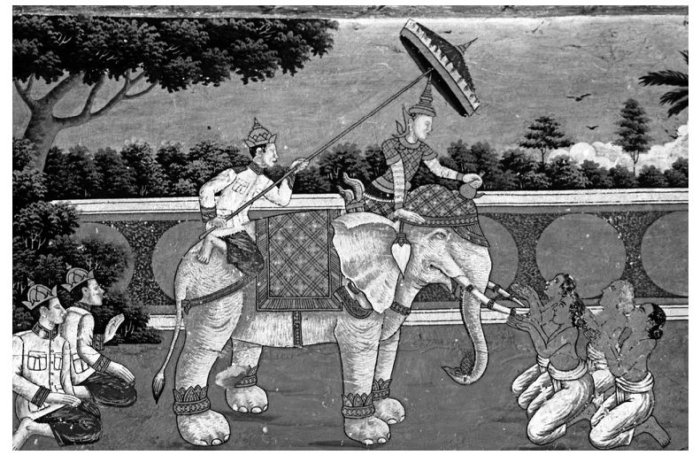
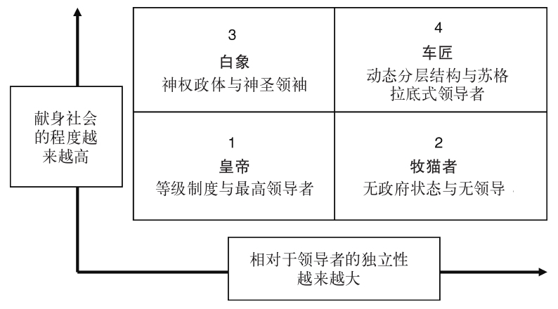

英语的“追随者”一词源自古英语词“Folgian ”和古挪威语词“Fylgja ”，意指陪伴、帮助或者——这个有点讽刺——领导。相对而言，它的前三种定义是正面的：
然而在以下这几个定义中，“追随者”一词的负面形象就更加清楚地凸显出来了：
熟悉英国喜剧演员哈里·恩菲尔德创作的人物“凯文”——那个可怕的少年就是个“不高兴”兼“没头脑”——的读者一定会注意到，在超凡的“领导者”看来，追随者的角色实在微不足道。的确，在列举正式领导者所必需的特质时，班里的学生通常会列出一长串的性格特征：魅力超凡、精力旺盛、富有远见、胆识过人、宽容大度、善于沟通、“风度翩翩”、一心多用、善于倾听、决断果敢、擅长团队建设、“高屋建瓴”、策略技巧丰富，诸如此类。没有任何两个学习领导力的学生或领导者所列的清单看起来完全一样，关于哪些特质或性格特征或能力是必要的，哪些是可有可无的，迄今未能达成共识。确乎如此，列举清单最有趣的一点就在于，到清单完成之时，拥有这么多技能之人的唯一可能的标签就是“神”。先不论那些特质是否自相矛盾，通常任何人都不可能说出哪个领导者至少在相当程度上拥有全部特质；然而显然，所有这些特质都是一个成功的组织所必需的。因此我们就面临这样一个悖论：拥有这一切的领导者——全知型领导者——根本不存在，但我们似乎很需要他们。的确，我们经常听到有人抱怨领导者，有人呼唤更多更优质的领导力，以至于如果有人假定确实存在过一个遍地都是好领导的美好旧时光，也情有可原。遗憾的是，翻遍领导力档案的角角落落也找不到这样一个黄金年代，而人们对这种时代的向往倒是自古皆然。类似这一“领导浪漫史”的都市传奇——曾经有过一个时代，刃迎缕解、剖决如流的英雄领袖据说比比皆是——不光是错误观念，而且全然背道而驰，因为它所建立的领导力模型几乎无人能够企及，因而抑制了领导力的发展，如此而已。这样说来，我们总是能看到这样的招聘广告也就不足为奇了——比方说招聘校长吧，其成功与否要么完全超出个人的奋斗范围，要么明显就是参照超人或神奇女侠的标准确定的，以至于只有凌波微步的“水上漂”们才有资格去应聘：罗马人的“人孰无过”这句格言大概都把这些领导者排除在外了。
对于这类招聘问题，或者当代商业首席执行官、公共部门或非营利组织主管的已知弱点，传统的解决方案是要求提高招聘标准，以便挑出“庸才”不要，剩下“贤才”来担当起转危为安的大任。然而这非但未能解决问题，反而生发出新的问题。另一种方法或许是着眼现在，而不是凭空憧憬：承认所有的领导者——因为他们是凡人肉身——都是有弱点的个体，而不是把每个领导者都看成是我们的理想的化身，也就是符合我们这些肉体凡胎、差强人意的追随者们希望的样子：完美。前一种方法就像一只“白象”——符合字典里对这个词的两种定义：其一是本身即为神祇的神秘兽类，其二是耗神费力、有勇无谋的徒劳之举。说起来在泰国历史上，国王会把得了白化病的大象赐予他最不喜欢的贵族，因为饲养它需要的特殊饮食和宗教规制，足以让这位贵族破家荡业。
白象也可以体现柏拉图对领导力的看法，因为在他看来，最重要的问题是“谁应该领导我们？”。答案当然是我们中间最有智慧的人：拥有最多知识、技能、权力，各类资源都最为丰富的人。这样的观念呼应了我们当前寻找全知型领导者的筛选标准，不偏不倚地指引我们去选出魅力超凡、卓尔不群的人物，其威望素著、远见明察、出群拔萃，让我们以往为该职位招聘的平庸鄙陋之人全都相形见绌——虽然说来也怪，选拔标准是一以贯之的。除非新任领导者的确是柏拉图所说的智慧超拔的哲君，否则他们迟早也会失败，届时整个闹剧还将重来一遍，结果多半也无甚差别。

图18 白象
当然在柏拉图看来，领导者很可能都是男人；毕竟希腊的女人们连自己城邦的公民都算不上，不过柏拉图也曾亲口表示，理论上，女人也有可能满足领导力的一切内在要求。自柏拉图的时代至今，关于性别在领导力中所起作用的假设已经是天壤之别，但事实证明，领导者中女性所占的比例仍然相当有限且相当稳定（见第五章）。
另一个做法是先承认领导者天生都有弱点，并努力抑制和约束这些弱点，而不是假装它们不存在。卡尔·波普尔 [52] 为此提供了更加站得住脚的依据，他指出，正如我们只能证伪而不是证实科学理论，同样，我们也应该采用适当的机制来抑制领导者而不是屈服于他们。在波普尔看来，民主就是撤选领导者的制度机制，其本身并没有什么好处，而且类似的过程应该是随处皆可复制的，即便在非政治组织内部鲜有民主系统运作。如若不然，虽说全知型领导者本来就是不负责任的追随者的痴心妄想和应聘者们乌托邦式的热切想象，但当下属们质疑领导者的指令或技能时，这些（不服从的）下属们往往会被更配合现有战略思维的人所取代，后者也就是所谓“唯命是从的人”。这样一来，这些下属就转变成了不负责任的追随者，其给领导者的建议往往只限于破坏性赞同：他们或许知道领导是错的，但有各种各样的理由少说为妙，因而也就默许了自己的领导者乃至整个组织走向毁灭。
然而，波普尔关于领导者的警告表明，约束领导者使其少犯错误、坚持做建设性的反对者、帮助组织实现目标而不是纵容任何领导者搞破坏，这是追随者的责任。于是建设性的反对者就会假定其领导者的属性不是柏拉图式的智者而是苏格拉底式的愚者：他们知道，没有人是全知全能的，并以此为行动依据。
当然，前提是下属们必须始终致力于社会或组织的目标（而且当然，如果某个组织对你没有对等承诺，你往往有理由不为该组织献身），同时又保留着自己的独立精神，不为领导者的反复无常所左右。恰是这一悖论式的献身与独立精神的结合，最有利于负责任的追随者成长。图19列出了献身和独立精神的几种可能的组合方式。要再次说明的是，该图的目的是解释说明，因而生成了一系列韦伯式“理想型”，它们既不是任何标准意义上的“理想”，也不是任何普遍意义上的“典型”。相反，这些类型的生成都是以启发为目的，本意在于突出和放大在理论上处于极致立场的极端后果。
虽有此保留，但方框1——等级制度——或许仍然包含着领导者与追随者之间最典型的关系，其中传统的等级制度就是在一个领导者的领导下运作的，后者被认为因为拥有益国益民的智力、远见、魅力等方面的个人 品质而高出追随者一等，因而负责解决组织的一切问题。这样的帝制野心与我们为这一领导者形式加注的标签相呼应：皇帝。相应地，那也会产生只会最低限度地献身组织目标的追随者——往往因为那些目标都沦为领导者的个人野心了，因此追随者只提供事不关己的破坏性赞同，成了真正“不负责任”的人。

图19 领导力、追随力、献身与独立
方框2源于同样对社会的漠不关心，但与它相结合的是更多地独立于领导者，结果就是一种形式上的“无政府状态”——没有领导者，也没有社会，无政府主义的支持者们认为，社会将随着个体领导者的缺失而自动消失。结果是一个类似于“牧猫者”的领导者——一个不可能完成的任务。我们会在最后一章再回头来讨论无政府主义。
方框3——神权政体——产生了大量群体精神，但那只是因为领导者被认为是一位神明、一个神圣的领导者，其信徒追随者被迫通过宗教要求而服从他的领导：也就是以上所述的白象。当且仅当领导者的确是神，是一个无可争议的全知全能、无处不在的神时，赞同才始终是建设性的。然而显而易见，虽然很多魅力领袖都会制造偶像崇拜，使他们表面上看来似乎属于这一类，但正因为该领袖实际上是个假冒的神，是在误导而不是领导自己的信徒，追随者的赞同往往会变成破坏性赞同。
最后一类，方框4——动态分层结构——指向这样一个组织：其领导者们意识到自身有着苏格拉底式的局限，因而领导力根据可知的时空要求被分散布局（这种动态分层结构的一个形象的例子是赛艇队，赛艇队的领导会根据形势需要，在舵手、船长、尾桨和教练之间转换）。认识到任何个体领导者都有局限性，就要求必须有负责任的追随者来弥补这些局限，而要做到这一点，最好是通过建设性反对，当追随者认为领导者的行为违反了社会的利益时，他们愿意提出反对意见。
曾带领芝加哥公牛队一度登上辉煌顶峰的教练菲尔·杰克逊转述过一个中国古代的故事，或许能更突出地说明这一点。公元前3世纪，中国皇帝刘邦在统一中国后设宴庆祝，在王公贵族及各位军事政治专家的簇拥之下出席。由于刘邦既非贵族出身，又没有卓越的军事或政治才干，一位宾客就问军事专家曹参，为什么刘邦能当上皇帝。曹参反问道：“什么决定了战车车轮的承重力呢？”那位宾客指出是轮辐的结实程度，但曹参反驳说：“那为什么两个轮辐一模一样的车轮，承重力却不同？其实，轮辐的间距也会影响车轮的承重力，而确定合理的轮辐间距正是车匠技艺的精髓。”如此看来，虽说轮辐代表了组织成功所必需的集体资源，也就是领导者所缺乏的资源，但轮辐间距才是追随者本人成长为领导者所需的自主性 [53] 。
总而言之，将组织成功所必需的多种天赋特长集结一处，才是将成功领导者与失败领导者区分开的关键：领导者不需要完美，恰恰相反，他们必须认识到自己的知识和权力有限，如果不依赖下属领导者和追随者来弥补自己的无知无能，他们将注定失败。真正的白象——患有白化病的大象——的确存在，但它们极其罕见，谁要指望它们来把我们拖出组织泥沼，恐怕没有意义；远不如找一个好的车匠，让组织的车轮转动起来。事实上，领导力属于社会，是整个社会行为的后果，而非个体领导者的私有财产和行为后果。更何况虽然白象是天生的，车匠却是后天学成的。事实上这一类比对我们区别此二者的教授和学习方法也都很有用，因为那些相信自己天生就是统治者的人不需要教师或顾问，而只需要唯唯诺诺的追随者，而车匠们却必须经历一段学徒时光，要从师父那里学习如何制造车轮，而在此过程中，反复摸索和试错是必不可少的。
另一个解决该悖论的方案是将关注焦点从领导者转向领导力 ，回归那条抽象的“领导之船” [54] ——那样一来，领导力的诸项特征就成了一种社会现象，可能出现在领导团队或追随者中，即便没有哪一个人拥有全部那些特征。因此，是那条隐喻的“船”上的全体船员，而非真正的组织之船的“船长”，需要满足建设和维持组织运作的要求；于是我们就有必要还原“领导力”，而不去依赖“乏力”的领导者。换句话说，领导力并非只局限于神力，倒有可能完全相反。正如阿兰达蒂·洛伊 [55] 在自己的小说中所述：“在我看来，微物之神恰是上帝的反面。上帝是控制欲很强的庞然大物。”这里我想指出，我们最好把领导力也看作是“微物之神”。
因此，高见就是世上根本没有高见；只有很多由追随者进行的微小行动，积少成多，促成了真正的进步。那并不是说微小行动可以作为“转折点”，虽然这也不无可能，而是说重大转变都是微小的事物聚积引发的质变。组织不是由船长掌舵的油轮，而是一个活的独立有机体，是个人组成的网络——因此其方向和速度是很多微小决策和行动的共同结果。或者如安妮女王治下的英国财政大臣威廉·朗兹所说：“省小钱，成大富。”这句话曾被宽泛地解释成“小事慎重，大事自成”，但这里的要点是把焦点从个体的英雄转移到众多英雄主义的人。这倒不是说首席执行官、校长、警察局长、军队将领等人无关紧要；他们的角色至关重要——我们将在最后一章讨论这一点——的确，他们自己必须为即将到来的“重大”决策做准备，不过那个决策可能是众多微小行动和决定集结而成的。
换一种说法就是，传统上很多领导力研究的重心——个体领导者的决策行动——最好被看成是组织成员的众多“意义建构”行为的结果。正如韦克所说，所谓的“现实”，正是人们试图为自己周围的“区区小事”建构意义的集体的、持续的成就，而不是个体领导者理性决策的结果。那不是说意义建构是一种民主活动，因为总有些人在意义建构的过程中做出的贡献更多一些，这些“领导者”就是那些“小修补匠”——对眼前五花八门的材料进行意义建构，并设法利用这些良莠不齐的材料，针对某一具体问题构建出全新解决方案的人。正因为此，成败往往取决于微小的决策和行动——既有领导者做出的，也有“追随者”做出的，但后者也在“领导”。这并不意味着我们应该抛弃柏拉图那个问题，“应该由谁来领导我们？”，而是更多地关注波普尔的问题，“如何阻止统治者把我们带向毁灭？”。事实上，我们无法确保找到全知型领导者，但由于我们为选拔机制花费了这么多心思，那些成为正式领导者的人往往会假设自己无所不知，因而很可能会犯下错误，那些错误可能会对每一个像我们这样人微言轻的追随者造成影响，并破坏我们的组织。
以臭名昭著的英国海军中将乔治·特莱恩爵士为例吧，1893年6月22日，他在叙利亚海上的行为导致了自己的旗舰“维多利亚号”沉没，因为他坚持让英国舰队分成两个纵队，在空间不足的情况下同时向内转弯。虽然好几位下属都警告他说这一行动很难成功，但特莱恩还是坚持让下属执行他的命令，最终使包括他本人在内的358名海员葬身鱼腹。随后组成的军事法庭审判了马克海姆海军少将，他指挥的“坎博堂号”撞沉了“维多利亚号”，马克海姆少将被问道：“如果他知道是错的，为什么还要照做？”“我认为，”马克海姆回答说，“特莱恩中将一定自有锦囊妙计。”法庭判处特莱恩应负全责，但同意“海军绝对不能鼓励下属质疑上司”。因此，错引一句伯克的话就是：领导力失效的唯一条件，就是好的追随者无所作为。 [56]
也并非只有全国性的军队或政治领袖才被认定为全知型领导者。举例来说，1982年1月13日，佛罗里达航空公司90号航班（“棕榈90号”）在恶劣的天气条件下坠毁时，从机长拉里·惠顿与副机长罗杰·佩蒂特的谈话中，我们显然能听出后者对起飞没有把握，但他未能阻止惠顿，从而不经意地导致了空难。特内里费空难 [57] 的情况也是一样，副驾驶员认为有问题，但未能阻止驾驶员在危险形势下起飞，因为他的警告太“微不足道”（另一架飞机就在他们前面起飞了，副驾驶员不知道他自己飞机上的驾驶员甚至没有获得起飞许可）。实际上，英国皇家空军的机组资源管理系统内部有一个“自动保险”机制，事实上允许机组的任何成员——无论职衔高低——要求机长放弃起飞或降落，其运作方式相当于英国陆军和海军的“停火”系统，也就是正在进行实弹射击的过程中，下级意识到上级没有看到的危险时，他们可以无视上级的命令。
通用汽车公司前总裁阿尔弗雷德·斯隆曾在董事会遭遇过同样的问题，但他意识到了现场出现的破坏性赞同：
三百年前，日本武士山本常朝也曾在书中回忆过类似的事件：
这个问题该如何应对呢？显然应该及时向领导者提供诚实的意见——建设性反对——才是合适的解决方案；但同样显而易见的，首先是领导者往往会通过招聘和任用那些“与官方意见更为一致”的下属（往往都是些提供破坏性赞同的马屁精）来阻碍这种做法。此外，领导者不愿意承认错误，更加重了追随者对于全知属性的认定。历史上只有王室弄臣，或宫廷小丑，才能提出建设性反对还不被杀头，主要是因为那些建议包裹在幽默的语句中，因而可以被君主一笑了之，哪怕君主私下里可能会更慎重地重新思考一下。要说明这一角色的难度和重要性，恐怕没有比莎士比亚的《李尔王》中的那个弄人更好的例子了。
李尔在故作姿态和自以为无所不能的一番表演中，把王国瓜分给了自己的女儿们。他先是被自己的忠臣肯特警告说这个行为莽撞愚蠢，但肯特因为诚实而遭到流放。后来弄人试图提出同样的建议，但他没有直言，而是用了一连串谜语，遗憾的是，待李尔终于理解了那些话，已经太迟了：
（《李尔王》第一幕第四场 [59] ）
要想重塑莎士比亚的“弄人”这个诚实建议者的角色而无需“花衣”也是有可能的，或许还更加成功，做法是，要么领导者需要依附于一人或多人，后者的地位不会因为提供了该建议而受到威胁，要么还可以要求某个决策机构的所有成员轮流行使“唱反调的角色”，从而将该角色制度化。这样一来，建议就成为角色的要求而不是某个具体的个人提出的，因而应该提供一定程度的保护，以防领导者可能会因为其下属提出的“有用”但或许“令人难堪”的建议而恼羞成怒。
不过领袖魅力的矛盾性质——在其起源和存在这两重意义上都是如此——仍然没有解决我们对完美领导者心怀向往的问题，那样的向往或许也恰恰反映了我们对于身为不受认可的追随者——身为微物之神——的平庸生活的不满。正如阿尔伯特·史怀哲 [60] 在自传《我的生平和思想》中写道的：
这是对领导力可以被简化为个体领导者的性格和行为这一观念的猛烈抨击。言外之意是，我们应该认识到，组织的成就恰恰就是其字面意思——是整个组织的成就，而不仅仅是某一位英雄领导者的行为的后果。然而历史的车轮虽然是由集体的领导者和集体的追随者共同推动的，承担责任的却往往是正式的或者马基雅维里式的单个领导者，大多数人则湮没在浩瀚的历史长河中，默默无闻，却并非毫无意义。乔治·艾略特在她的小说《米德尔马契》的结尾描述多萝西娅时，就深刻而清晰地指出了这一点：
领导者的确重要——我们将在最后一章考察其角色——但各种各样的其他元素也同样重要，而这些往往会对成败起到决定性作用。在这些其他因素中，我们最难以理解、疏于考察的或许就要属追随者的角色了，没有他们，领导者根本无法存在。但这并不是说我们可以抛弃个体领导者，单单依靠集体的自发领导力——最后一章将论述这个问题。